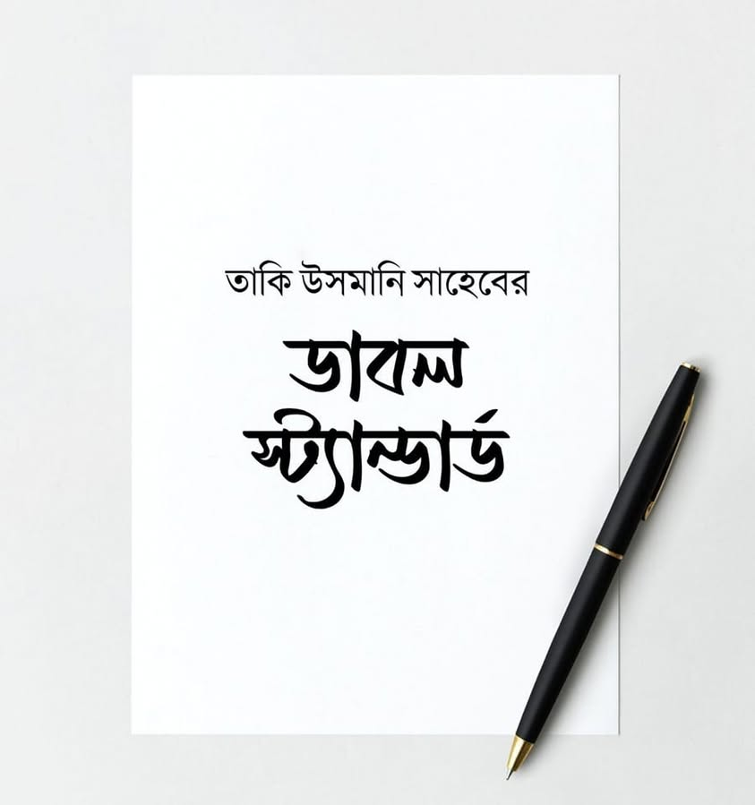

তাকি উসমানি সাহেবের ডাবল স্ট্যান্ডার্ড; প্রমাণ তারই কিতাব
২৯ জানুয়ারি, ২০২৩
তাকি উসমানি সাহেবের ডাবল স্ট্যান্ডার্ড; প্রমাণ তারই কিতাব।
সম্প্রতি প্রকাশিত ফতোয়া সবাই জানেন-
"পাকি-স্তান সরকারের বিরুদ্ধে কোনোপ্রকার সশস্ত্র বিদ্রোহ নাজায়েয, হারাম এবং বাগাওয়াত। কেননা এ সরকার ইসলামি সরকার।"
কিন্তু আপনি যদি তাকি উসমানি রচিত সহিহ মুসলিমের ব্যাখ্যাগ্রন্থ "তাকমিলাতু ফাতহিল মুলহিম পড়েন", তাহলে
তার ঠিক বিপরীত ফতোয়া দেখতে পাবেন। সেখানে তার পর্যালোচনা থেকে পরিষ্কার প্রমাণিত হয় যে, পাক' সরকার কোনোভাবেই ইসলামি সরকার নয়। তার সংবিধান ইসলামি তো নয়-ই; বরং সম্পূর্ণ কুফরি সংবিধান। এদের বিরুদ্ধে বিদ্রোহ বৈধ।
শাইখ তাকি উসমানি লেখেন-
أن فسق الإمام على قسمين: الأول: ما كان مقتصراً على نفسه، فهذا لا يبيح الخروج عليه وعليه يحمل قول من قال: إن الإمام الفاسق أو الجائر لا يجوز الخروج عليه. والثاني ما كان متعدياً وذلك بترويج مظاهر الكفر وإقامة شعائره، وتحكيم قوانينه، واستخفاف أحكام الدين والامتناع من تحكيم شرع الله مع القدرة على ذلك لاستقباحه، وتفضيل شرع غير الله عليه فهذا ما يلحق بالكفر البواح ، ويجوز حينئذ الخروج بشروطه.
রাষ্ট্রনায়কের ফিসক-পাপাচার দুই প্রকারের।
প্রথম- যে ফিসক তার ব্যক্তিজীবন পর্যন্ত সীমাবদ্ধ থাকে। এমন হলে তার বিরুদ্ধে বিদ্রোহ বৈধ নয়। যারা ফাসেক ও জালেম শাসকের বিরুদ্ধে বিদ্রোহ বৈধ নয় বলেছেন, তাদের কথা এ প্রকার ফিসকের উপর প্রযোজ্য।
দ্বিতীয়- সীমাতিক্রমী ফিসক: তা কুফরি অ্যাপিয়ারেন্সকে রেওয়াজ করে নেয়া, কুফরি নিদর্শন প্রতিষ্ঠা, কুফরি আইন-কানুনকে সালিশ মানা এবং দ্বীনের বিধিবিধানকে তুচ্ছজ্ঞান করা, ক্ষমতা থাকাসত্ত্বেও আল্লাহর শরিয়তকে অপছন্দনীয় ঠেকে বলে তাকে সালিশ মানা থেকে বিরত থাকা ও আল্লাহর শরিয়া ছেড়ে ভিন্নকিছু তার উপর প্রাধান্য দেয়ার কারণে হবে- এগুলো সুস্পষ্ট কুফরির সাথে সম্পৃক্ত হয়। তখন শর্তসাপেক্ষে বিদ্রোহ করা বৈধ হবে। [তাকমিলাতু ফাতহিল মুলহিম-৩/২৭২]
বিশ্বাস করেন, যদি তাকি উসমানির রেফারেন্স ছাড়া অন্য কেউ উপর্যুক্ত কথাগুলো বলত, তাহলে মুরিদরা খা-রেজি খা-রেজি বলে চিক্কুর পাড়ত।
তাকি উসমানির পর্যালোচনা থেকে পরিষ্কার যে, আল্লাহর আইনকে পেছনে ফেলে অন্যকোনো আইন প্রণয়ন ও তা বাস্তবায়ন সুস্পষ্ট কুফরি এবং এটি শাসকের বিরুদ্ধে বিদ্রোহ বৈধ হওয়ার একটি কারণ।
এখানেই শেষ নয়। শাসককে ক্ষমতাচ্যুত করার সঙ্গত কারণগুলো আশরাফ আলি থানভি রাহ-এর বরাতে তাকি উসমানি সংক্ষেপে সাত প্রকারে ভাগ করেছেন।
তন্মধে সপ্তম প্রকারের দিকে আপনাদের দৃষ্টি আকর্ষণ করতে চাই।
তাকি উসমানি লেখেন-
والقسم السابع : أن يرتكب فسقاً متعدياً إلى دين الناس، فيكرههم على المعاصي.
(শাসক ক্ষমতাচ্যুত করার সপ্তম কারণ)
শাসক এমন পাপাচারে লিপ্ত হয় যে তা মানুষের দ্বীন-ইসলাম পর্যন্ত সংক্রমিত করে এবং সে মানুষকে পাপাচারে বাধ্য করে।
ويدخل هذا الإكراه في بعض الأحوال في الكفر حقيقة أو حكماً، وذلك بأن يصرّ على تطبيق القوانين المصادمة للشريعة الإسلامية، إما تفضيلاً لها على شرع الله ، وذلك كفر صريح أو توانياً وتكاسلاً عن تطبيق شريعة الله، بما يغلب منه الظن أن العمل المستمر على خلاف الشريعة يحدث استخفافاً لها في القلوب.
এই বাধ্যকরণ কখনো কখনো কুফরির অন্তর্ভুক্ত হবে- হাকিকি (প্রকৃত) কুফরি বা হুকমি (বিধানগত) কুফরি।
আর তা এ জন্য যে, সে শরিয়া বিরোধী আইন বাস্তবায়নে চাপ সৃষ্টি করে, হয় তা আল্লাহর শরিয়তের উপর শ্রেষ্ঠত্বদানের কারণে হবে- এটি সুস্পষ্ট কুফরি। বা আল্লাহর শরিয়ত বাস্তবায়নে অবহেলা ও অলসতার কারণে হবে- এতে ক্রমাগত শরিয়া পরিপন্থী কাজ অন্তরে শরিয়তের ব্যাপারে অবজ্ঞা সৃষ্টি করার সম্ভাবনা থাকে।
فإن مثل هذا التواني والتكاسل، وإن لم يكن كفراً صريحاً بحيث يكفر به مرتكبه، ولكنه في حكم الكفر.
(শরিয়া আইন বাস্তবায়নে) এ ধরণের অবহেলা ও অলসতা যদিও সুস্পষ্ট কুফর নয় যে, এতে লিপ্ত ব্যক্তিকে তাকফির করা হবে। তবে তা হুকমি কুফরের অন্তর্ভুক্ত।
[তাকমিলাতু ফাতহিল মুলহিম- ৩/২৭৫]
এরপর তিনি এ ধরণের অবহেলা কুফরি হওয়ার উপর একটি চমৎকার দলিল পেশ করেছেন।
"যদি কোনো শহরের বাসিন্দা আজান দেয়া ছেড়ে দেয়, তবে তাদের সাথে যুদ্ধ করা বৈধ হয়ে যায়। কেননা আজান দ্বীনের নিদর্শন। আর তা ত্যাগ করার মাধ্যমে আজানকে প্রকাশ্যে তুচ্ছজ্ঞান করা হয়।"
بدليل ما ذكره الفقهاء من أنه لو ترك أهل بلدة الأذان حلّ قتالهم، لأنه من أعلام الدين، وفي تركه استخفاف ظاهر به راجع باب الأذان من رد المحتار (۱ : ٣٨٤).
[প্রাগুক্ত]
এরপর শাইখ বিধান বর্ণনা করে লেখেন-
وحينئذ يلحق هذا القسم السابع بالقسم الثالث، وهو الكفر البواح، فيجوز الخروج.
তখন (অর্থাৎ শরিয়া বিরোধী আইন প্রয়োগ এবং শরিয়া আইন বাস্তবায়নে অবহেলার কারণে) এ সপ্তম প্রকারটি তৃতীয় প্রকারের সাথে সংযুক্ত হবে। আর তা হলো কুফরে বাওয়াহ বা সুস্পষ্ট কুফরি। তখন বিদ্রোহ করা বৈধ। [প্রাগুক্ত]
উপর্যুক্ত বিশ্লেষণ থেকে প্রমাণিত হলো যে, শরিয়া পরিপন্থী গণতান্ত্রিক আইনকে শ্রেষ্ঠ মনে করে পালন করা হোক বা শরিয়া আইনের প্রতি অবহেলার কারণে হোক সর্বাবস্থায় তা স্পষ্ট কুফরের অন্তর্ভুক্ত হবে। এমন শাসক ও শাসনব্যবস্থার বিরুদ্ধে বিদ্রোহ করা বৈধ। যার প্রমাণ সহিহ মুসলিমের হাদিস। যেখানে রাসূল ﷺ শাসকের আনুগত্যের উপর বাইয়াত গ্রহণের পর তার বিরোধিতা করতে নিষেধ করেন। এরপর বলেন-
إلا ان تروا كفرا بواحا.
অর্থাৎ শাসকের মাঝে সুস্পষ্ট কুফরি দেখলে বিরোধিতা করবে। [সহিহ মুসলিম- ৪৭৪৮]
জানার বিষয়- পাকিস্তান স্বাধীন হওয়ার পর থেকে অর্থাৎ ১৪ আগষ্ট ১৯৪৭ থেকে আজ অবধি কখন শরই শাসন চালু ছিল? কে চালু করেছিল?
যদি শরই শাসন বাস্তবায়িত না থাকে, তবে তো তাকি উসমানির বক্তব্য থেকেই তা অনৈসলামিক ও কুফরি শাসকব্যবস্থা বলে প্রমাণিত হয়। তাহলে আজ হঠাৎ কী করে বা কোন এঙ্গেল থেকে পাক সরকার ইসলামি সরকার আর তার সংবিধান নজিরবিহীন ইসলামি সংবিধান হয়ে গেলো?! এটি কি তার ডাবল স্ট্যান্ডার্ড নয়?
--------------------------------------------------------------------------
এবার আসি প্রাসঙ্গিক আরো একটি আলোচনায়-
সরকারের বিরুদ্ধে কথা বললেই যারা খা-রেজি ট্যাগায়, তাদের উচিত প্রথমে তাকি উসমানিকে ট্যাগ দেয়া। কারণ, তার বক্তব্য থেকে পরিষ্কার প্রমাণিত হয়েছে যে, ক্রমাগত দীর্ঘ দিন শরিয়া পরিপন্থী আইনের উপর রাষ্ট্র পরিচালিত হতে থাকলে তার বিরুদ্ধে বিদ্রোহ করা বৈধ, যেভাবে দীর্ঘ দিন আজান বন্ধ রাখলে কি-তাল বৈধ।
এখানেই শেষ নয়, তাকি উসমানি সাহেবের মতে জালেম শাসকের বিরুদ্ধেও বিদ্রোহ করা বৈধ। ইমাম আবু হানিফার রাহ. মাজহাবও এটি।
দলিল:- হুসাইন রা. এর বিদ্রোহ ইয়াযিদের বিরুদ্ধে।
খলিফা মানসুরের বিরুদ্ধে আবু হানিফার অবস্থান।
বনি উমাইয়্যাদের বিরুদ্ধে বিদ্রোহকারীদের ইমাম আবু হানিফা কর্তৃক সাহায্য-সহায়তা।
তাকি উসমানি লেখেন-
أن زيد بن علي لما خرج على بني أمية أيده الإمام أبو حنيفة بماله.
★ যায়েদ বিন আলী যখন বনি উমায়্যাদের বিরুদ্ধে বিদ্রোহ করেন, তখন ইমাম আবু হানিফা রাহ. মাল দিয়ে তাকে শক্তিশালী করেছেন। [ তাকমিলা-৩/২৭১ ]
★ এছাড়া মোহাম্মদ নফস আয-যাকিয়্যহ ও তার ভাই ইব্রাহিম বিন আব্দিল্লাহকে ইমাম আবু হানিফা রাহ. পরিপূর্ণ সাপোর্ট করতেন, যারা খলিফা মানসুরের বিরুদ্ধে বিদ্রোহের অগ্রনায়ক ছিল। [প্রাগুক্ত]
وكذلك قصة سيدنا الحسين بن علي الله مع يزيد بن معاوية معروفة، وخرجت جماعة من المتقين على الحجاج بن يوسف.
★ একইভাবে ইয়াযিদের সাথে হুসাইন রা-এর ঘটনা তো প্রসিদ্ধ।
★ হাজ্জাজ বিন ইউসুফের বিরুদ্ধে বিদ্রোহ করেছিল একদল মুত্তাকি। অর্থাৎ আব্দুল্লাহ বিন যুবায়ের রা. ও তার সঙ্গীসাথী। [প্রাগুক্ত]
পাক সরকার ও তার সেনাবাহিনী একটি জুলুমের স্বর্গরাজ্য কায়েম করে রেখেছে। যার জুলুমের শিকার আলেম থেকে নিরীহ তালাবা পর্যন্ত। বাংলাদেশ সরকারের জুলুম ও কুফরি শাসনব্যবস্থার কথা না-ই আর বলি। চক্ষু যাদের আছে, তাদের কাছে তো পরিষ্কার। যাদের নেই তাদের দেখানোর চেষ্টা অনর্থক।
এরপরও যারা সরকার বিরোধী আন্দোলনকে খা-রেজিপনা মনে করেন, বিদ্রোহী মনোভাবকে খা-রেজি ট্যাগ দিতে চান, তাদের উচিত প্রথমে দোষারোপ করা ইমাম আবু হানিফাকে রাহ. এরপর তাকি উসমানিকে। কারণ, এ খা-রেজি মেজাজ তাদের জীবনী ও ফাতাওয়া থেকেই হাসিল হয়েছে।
সবশেষে আশা করব, তাকি উসমানি তার বক্তব্য থেকে রুজু করবেন এবং দ্বিচারিতার দোষ থেকে মুক্ত হতে কিতাবে দেয়া ফাতাওয়ার অনুকূলে অভিমত দেবেন।
একইসাথে বঙ্গীয় অনুসারীদল যাকে-তাকে খা-রেজি ট্যাগ দেয়ার পূর্বে কিতাবের ফাতাওয়া এবং অন্তত ইমাম আবু হানিফা রাহিমাহুল্লাহর সংগ্রামী জীবনচরিত দেখে নেয়ার আহবান থাকবে।
